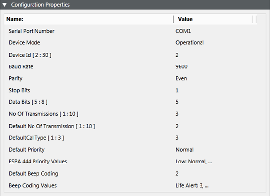
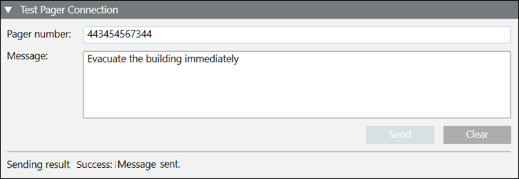
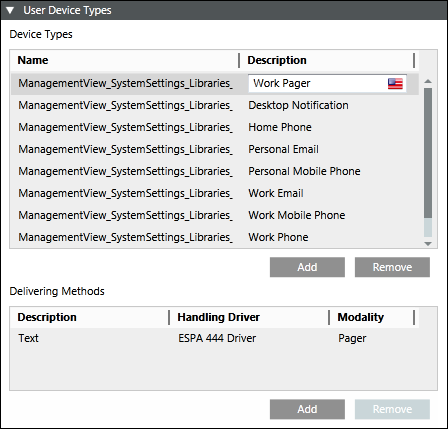

Create ESPA Paging System Device
- Navigate to Project > Field Networks > ESPA 444 Interface Field Network.
- Click the Network Editor tab.
- Click Create
 .
. - In the New object dialog box, enter a name and description.
- Click OK.
- In the Device Editor tab that displays, enter a description for the device in the Device Settings expander.
- In the Configuration Properties expander, enter values as stated below (For more information refer ESPA Paging System section in Notification Supported HW/SW Device Configurations Guide):
NOTE: Communication for the protocol ESPA Paging System device follows a specific order of the message content. While configuring your pager device, check if your pager device is compatible with the content order specified under the ESPA Paging System device. For more information, see section ESPA Paging System Device Message Order. 
- Enter the COM port address of the device in the Serial Port Number field. You should enter a valid COM port address string of the device.
- From the Device Mode drop-down list, select Operational so that the driver processes the messaging command and the device configuration change command, and performs status checks for the device. You can also select the following:
- Disabled: In this mode, the driver does not process the messaging command, or the device configuration change command, and can perform status checks for the device. The device remains in a disconnected state.
- Administrative: In this mode, the driver processes the device configuration change command and performs status checks for the device. The device will be in a Disconnected/Connected state based on the connection state. - Enter the ID assigned to the device in the Device Id field.
- Select the Baud Rate the device is using serially from the drop-down list.
- Select the Parity, the device is using from the drop-down list.
- Select the number of Stop Bits, the device serial protocol is using from the drop-down list.
- Select the number of Data Bits, the device is using to communicate serially.
NOTE: The value range is 5 to 8 bits. - Enter the number of attempts, a message should be sent by the ESPA managed device to the corresponding recipients in the No. of Transmissions field.
- Enter the default value of the number of transmissions of the ESPA managed device in the Default No. of Transmissions field.
- Select the default values of call types for the ESPA managed device from the Default Call Type field. The details of each call type are mentioned below:
1 - Reset (cancel) call
2 - Speech call
3 - Standard call - Enter the default value of priority for the ESPA managed device in the Default Priority field.
- Map the message priority with the ESPA 4.4.4 priority values in the ESPA 4.4.4 Priority Values field.
NOTE: For every message priority select ESPA 4.4.4 priority values. For example, a notification priority High can be associated with ESPA 4.4.4 priority value Alarm (Emergency). - Contains the default value of beep coding records for the ESPA managed device in the Default Beep Coding field.
- Maps the message type with the beep coding values from the Beep Coding Values field.
NOTE: For example, a message type of Life Safety Alert can be associated with Beep coding value 5. - In the Test Pager Connection expander, you can send a test text message.

- Enter the pager number and message in their respective fields.
- Click Send to send the test message.
- The sending result displays in the expander after the message is sent.
- In the Routing Configuration expander, enter values as detailed in Routing Configuration Expander from the Devices section.
- Click Save
 .
.
- The user device type is automatically configured. In the Recipient Editor tab, under the User Device Types expander, you can see that the ESPA 444 Driver is set as the handling driver and modality is set as Pager.
